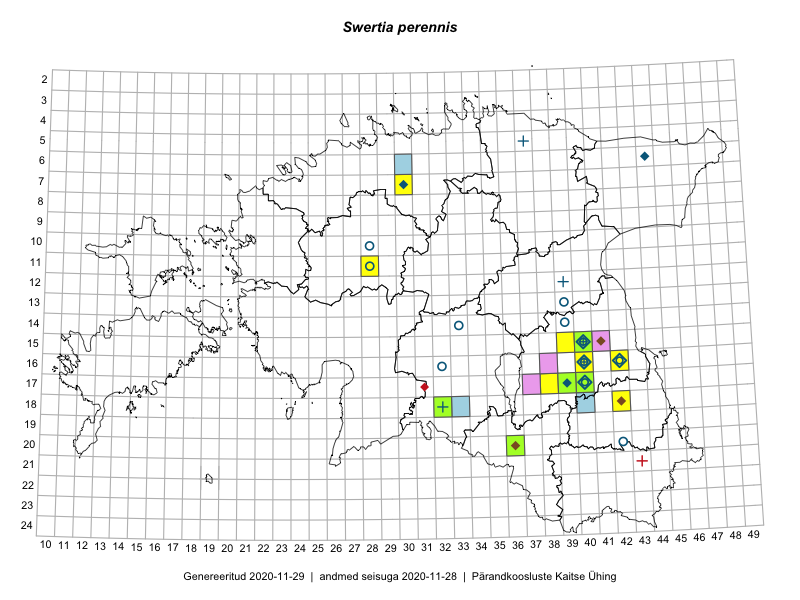

Swertia perennis
Uuendatud: 2016-12-02
Kaardile koondatud taksonid: Swertia perennis L.

Kaart põhineb 12 vaatlusel. Taksonit on leitud 5 ruudust.
Viited andmebaasikirjetele
- Peedu Saar, Thea Kull: 2015-06-19: 17-40: GPS punkt
- Peedu Saar: 2015-06-22: 16-42: GPS punkt
- Thea Kull, Peedu Saar: 2015-06-19: 17-40: ala
- Peedu Saar: 2015-06-22: 16-42: ala
- Thea Kull: 2015-06-15: 15-40: ala
- Thea Kull: 2015-06-21: 15-40: GPS punkt
- Maret Gerz, Ott Luuk: 2014-06-25: 16-40: ala
- Kaire Lanno, Indrek Melts: 2016-08-21: 15-40: ala
- Kaire Lanno, Indrek Melts: 2016-08-21: 15-40: GPS punkt
- Kaire Lanno, Indrek Melts: 2016-08-24: 16-42: GPS punkt
- Toomas Kukk, Peedu Saar: 2016-09-09: 07-30: ala
- Peedu Saar, Toomas Kukk: 2016-09-09: 07-30: GPS punkt